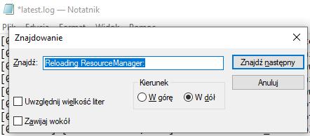
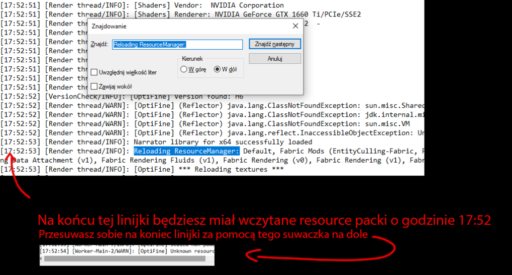
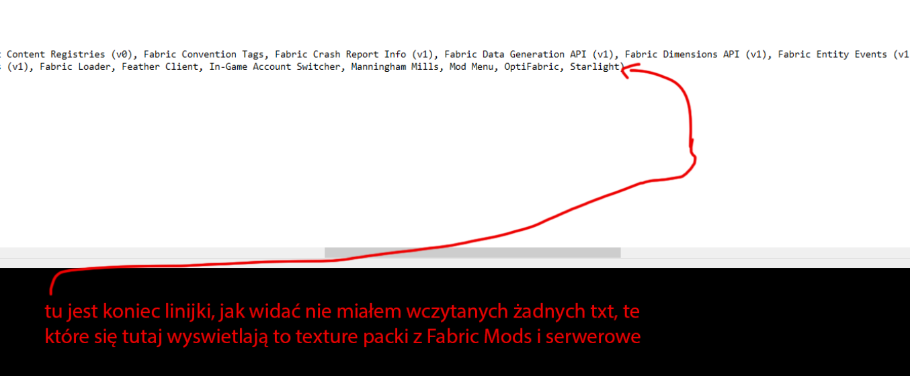
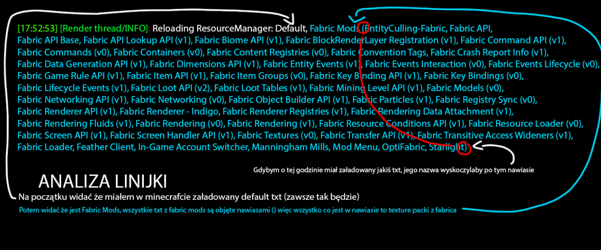
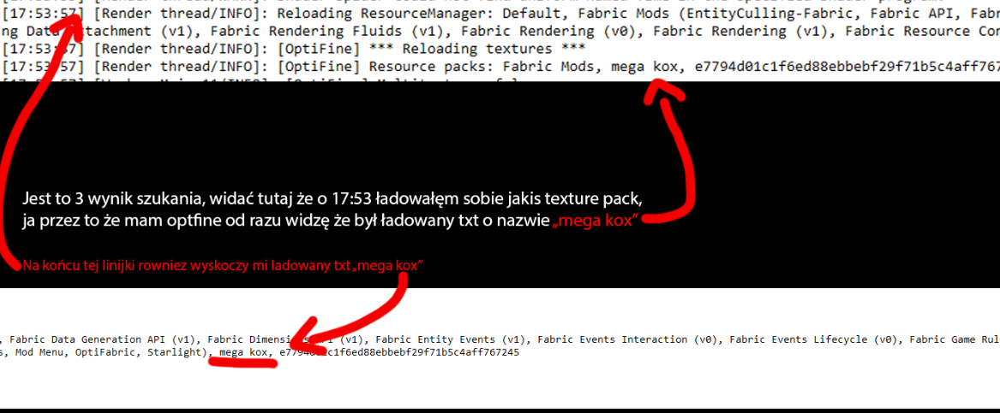

1. ㅤPowiedz osobie sprawdzanej aby weszła w ESCAPE -> OPTIONS -> RESOURCE PACKS 2. ㅤPowiedz aby kliknął "OPEN PACK FOLDER", następnie powiedz aby cofnął się do folderu .minecraft 3. ㅤNastępnie powiedz mu aby wszedł w folder logs, i niech poszuka tam pliku latest i go otworzy za pomocą notatnika
4. ㅤ W notatniku niech kliknie ctrl + f, jeżeli to nie działa to w notatniku na górze niech kliknie edycja -> znajdź 5. ㅤ Będąc na samej górze pliku mówisz mu aby w okienku znajdź wpisał: Reloading ResourceManager (Ważne jest to aby kierunek był zaznaczony jako "W dół")

6. ㅤ Teraz niech kliknie jeden raz "Znajdz nastepny", wyskoczy mu coś takiego:

7. ㅤ Niech przesunie w prawo na koniec linijki


8. ㅤ W linijce wyżej widać że żadnego txt nie miałem załadowanego, lecz mogłem potem sobie załadować txt więc sprawdzanemu graczowi każesz kliknąć znów znajdz nastepny 9. ㅤ Jeżeli ma txt anarchii, to w 2 wyniku szukania wyskoczy mu to samo co wcześniej tylko że na końcu jeszcze będzie "e7794d01c1f6ed88ebbebf29f71b5c4aff767245", jest to txt anarchii więc znów mówisz aby to kliknął

10. ㅤ Teraz wchodzisz sobie w minecrafta i sprawdzasz txt o nazwie "mega kox", w moim przypadku jest to XRAY, pamiętaj aby ten txt był najwyżej podcazs ładowania do mc